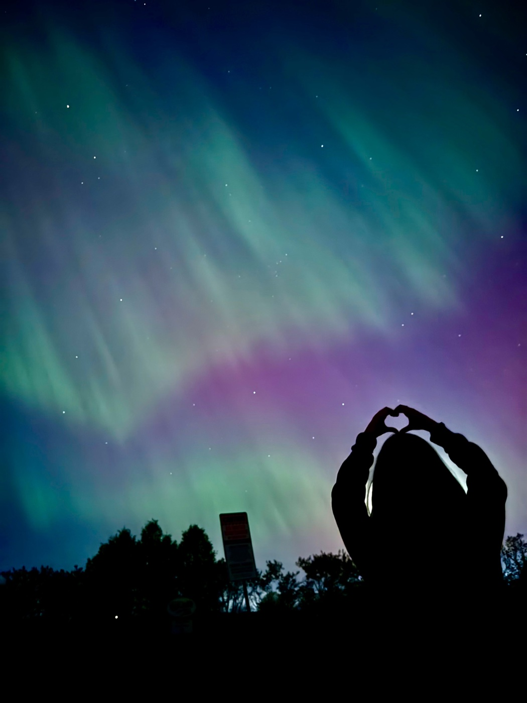

Working in AI & ML.
Systems Design Engineering at Waterloo.
Toronto

Under the northern lights
CURRENTLY BUILDING
BigBack.
I’m building BigBack, an app for foodies.
02 / ABOUT
A bit about me.
Hi, I'm Sarah! I study Systems Design Engineering at the University of Waterloo, which mostly means I spend a lot of time figuring out how things work (and why they don't).
I like building things, playing around with data, and working on ideas that seem interesting enough to try.
When I'm not doing that, I'm probably watching Formula 1, looking at cars I don't need, or planning a trip somewhere.
View résumé ↗
03 / EXPERIENCE
Experience
04 / PLAY BREAK
Orbit
Five letters, six guesses. F1 and space.
Guess any five-letter English word.
Green = right spot. Pink = wrong spot.
Answers are F1 or space related.
GET IN TOUCH